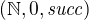
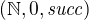
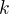

Logic and Proof
18 The Natural Numbers and Induction in Lean
The goal of this chapter is to give a more axiomatic, foundational account of the natural numbers and its basic operations. First, we will do this informally, showing how operations like addition and multiplication can be defined using the principle of recursion, and showing how some of their basic properties can be proved using induction. Then we will see how this plays out in the Lean theorem prover, using Lean's built-in mechanisms for induction and recursion.
18.1 Defining the Arithmetic Operations Axiomatically
Let  be the set of natural numbers with least element
be the set of natural numbers with least element  , and
let be the successor function. The structure  satisfies the following clauses:
, and
let be the successor function. The structure  satisfies the following clauses:
- for any
 in .
in . - For every and
 in , if
in , if  , then . In other words, is injective.
, then . In other words, is injective. - If
 is any subset of with the property that is in
and whenever is in then is in , then
is any subset of with the property that is in
and whenever is in then is in , then  .
.
The last clause can be reformulated as the principle of induction:
Suppose is any property of natural numbers, such that
holds of
Remember that this principle can be used to justify the principle of definition by recursion:
Let
be any element of
- for every
.
We can use the principle of recursive definition to define addition with the following two clauses:

Note that we are fixing , and viewing this as a function of .
If we write ,  , and so on, it is easy to
prove from the definition of addition.
, and so on, it is easy to
prove from the definition of addition.
We can proceed to define multiplication using the following two clauses:
We can also define a predecessor function by
and ``truncated subtraction'' by
With these definitions and the induction principle, one can prove all the following identities:
- implies

We will do the first five here, and leave the remaining ones as exercises.
Proposition. For every natural number , if then
.
Proof. By induction on . We have ruled out the case where is
, so we only need to show that the claim holds for . But
in that case, we have by the
second defining clause of the predecessor function.
Proposition. For every , .
Proof. By induction on . We have by the first
defining clause for addition. And assuming , we have
, using the second defining clause for
addition.
Proposition. For every and , .
Proof. Fix and use induction on . Then  , we have
, using the first defining clause
for addition. Assuming the claim holds for , we have
, we have
, using the first defining clause
for addition. Assuming the claim holds for , we have
using the inductive hypothesis and the second defining clause for addition.
Proposition. For every , , and ,  .
.
Proof. By induction on . The case where  is easy, and in
the induction step we have
is easy, and in
the induction step we have
using the inductive hypothesis and the definition of addition.
Proposition. For every pair of natural numbers and ,  .
.
Proof. By induction on . The base case is easy using the second
proposition above. In the inductive step, we have
using the third proposition above.
18.2 Induction and Recursion in Lean
Internally, in Lean, the natural numbers are defined as a type
generated inductively from an axiomatically declared zero and succ
operation:
If you click the button that copies this text into the editor in the
online version of this textbook, you will see that we wrap it with the
phrases namespace hide and end hide. This puts the definition into
a new "namespace," so that the identifiers that are defined are
hide.nat, hide.nat.zero and hide.nat.succ, to avoid conflicting
with the one that is in the Lean library. Below, we will do that in a
number of places where our examples duplicate objects defined in the
library. The unicode symbol ℕ, entered with \N or \nat, is a
synonym for nat.
Declaring nat as an inductively defined type means that we can
define functions by recursion, and prove theorems by induction. For
example, these are the first two recursive definitions presented in
the last chapter:
Addition and numerals are defined in such a way that Lean recognizes
succ n and n + 1 as essentially the same, so we could instead
write these definitions as follows:
If we wanted to define the function m^n, we would do that by fixing
m, and writing doing the recursion on the second argument:
Lean is also smart enough to interpret more complicated forms of recursion, like this one:
In addition to defining functions by recursion, we can prove theorems
by induction. In Lean, each clause of a recursive definition results
in a new identity. For example, the two clauses in the definition of
pow above give rise to the following two theorems:
Notice that we could alternatively have used (pow m n) * m in the
second clause of the definition of pow. Of course, we can prove that
the two definitions are equivalent using the commutativity of
multiplication, but, using a proof by induction, we can also prove it
using only the associativity of multiplication, and the properties
1 * m = m and m * 1 = m. This is useful, because the power
function is also often used in situations where multiplication is not
commutative, such as with matrix multiplication. The theorem can be
proved in Lean as follows:
This is a typical proof by induction in Lean. It begins with the
phrase nat.induction_on n, and is followed by the base case and the
inductive hypothesis. The proof can be shortened with a clever use of
rewrite:
Remember that you can write a rewrite proof incrementally, checking
the error messages to make sure things are working so far, and to see
how far Lean got. The phrase ih at {1} tells Lean to apply the
inductive hypothesis only at the first place where it matches, and the
phrase -mul.assoc tells Lean to apply the associativity equation in
the backward direction.
In any case, the power function is already defined in the Lean library
as pow_nat. (It is defined generically for any type that has a
multiplication; the nat in pow_nat refers to the fact that the
exponent is a natural number.) The definition is essentially the one
above, and the theorems above are also there:
The library also allows us to use the usual notation:
As another example of a proof by induction, here is a proof of the
identity m^(n + k) = m^n * m^k.
Notice the same pattern. This time, we do induction on k, and the
base case and inductive step are routine. Once again, with a bit of
cleverness, we can shorten the proof with rewrite:
You should not hesitate to use calc, however, to make the proofs
more explicit. Remember that you can also use calc and rewrite
together, using calc to structure the calculational proof, and using
rewrite to fill in each justification step.
18.3 Defining the Arithmetic Operations in Lean
In fact, addition and multiplication are defined in Lean essentially
as described in Section 18.1. The defining equations for addition hold
by reflexivity, but they are also named add_zero and add_succ:
Similarly, we have the defining equations for the predecessor function and multiplication:
Here are the five propositions proved in Section 18.1.
18.4 Exercises
- Give an informal but detailed proof that for every natural number
, .
- Prove the multiplication is associative and commutative, in the same way.
- Prove that multiplication distributes over addition: for every
natural numbers , , and ,
 .
. - Prove .
- Formalize all these theorems in Lean.